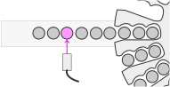
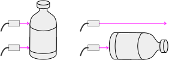
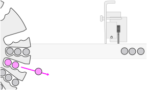
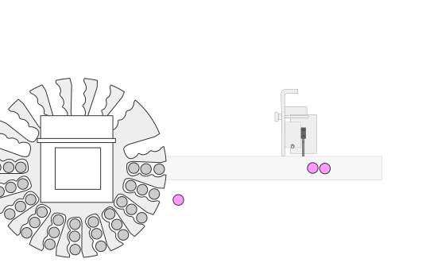
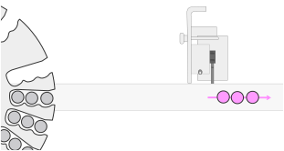
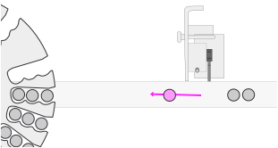
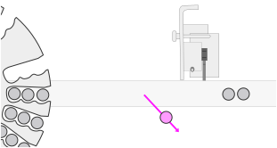

Product Handling
Infeed
The initial product handling task occurs at the infeed of the wheel—at index zero. As items flow into the wheel, they will begin to backup until the package eye is broken. If the package eye is broken for a set period of time, the wheel will begin indexing.
The infeed area of the system is optionally used to detect the presence of fallen items—also know as bottle–down detection. Bottle–down detection require an additional sensor, which—when paired with the package eye—detects the presence of a fallen item.
Was this helpful?
Yes
No
In the Wheel
Product handling issues inside the wheel are generally related to the selected acceleration and velocity of the wheel. As these values increase—in an effort to achieve higher throughput—the ability to properly handle the items is reduced. Items are more likely to slide out of the wheel at higher speeds and levels of acceleration.
Item slips that occur inside the wheel will eventually result in an error at the rejector. The item the slipped out of the wheel will be expected at the rejector when the associated slug reaches the rejector photoeye. When the eye detects the missing item, an error will be reported, and the line will likely be stopped.
Was this helpful?
Yes
No
Outfeed & Rejecting
The final product handling phase occurs after the items exit the wheel. At this stage, the items slide off the top–plate and back onto the conveyor. At the same time, the items will begin interacting with the guiderails on either side of the conveyor. Under normal circumstances, items flow out of the wheel, and progress down the conveyor as a group. The photoeye at the rejector expects to see each individual item, and anticipates that they will arrive with a limited distance between each item.
Friction between the item and the conveyor will determine how much slip will occur before the item begins moving. Likewise, the interaction between the item and the guiderails may cause individual items to slip. Significant slipping can cause errors at the reject station.
The outfeed item position may also be disrupted if items fall from the conveyor, or are removed by hand. Again, the rejector expects a full slug of product to reach and be detected by its photoeye. If this is not the case, the system will signal a fault. Faults caused by a removed or fallen item should be easily recognized by the operator. System challenges will likely be in place to ensure that the control properly recognizes these conditions.
Was this helpful?
Yes
No